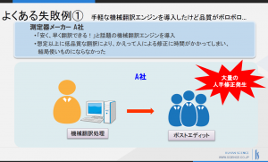

【報告】「機械翻訳導入に失敗する企業、成功する企業」セミナーを開催しました¶
2018年4月18日（水）、弊社セミナールームにて、 「機械翻訳導入に失敗する企業、成功する企業~機械翻訳(自動翻訳) 導入に失敗しない3つのポイント~」をテーマに、機械翻訳セミナーを開催いたしました。
今年2月に開催したセミナーでは、機械翻訳導入時のエンジン選定の進め方とポイントについてお話ししました。 今回のセミナーでは、「機械翻訳（自動翻訳）を導入したけれどもうまく運用できていない…」と言ったような失敗を引き起こさない為のポイントを中心にご説明いたしました。
セミナーの概要については、こちら をご覧ください。 http://www.science.co.jp/mt/seminar/20180418.html
ご参加くださった皆様、誠にありがとうございました。
今回のセミナーでは、機械翻訳導入に失敗する企業と成功する企業を比較し、失敗を回避する為にはどのような点に気を付けるべきかというポイントをご説明いたしました。また、それらのポイントを踏まえての導入の進め方としてウォーターフォール型とアジャイル型の2つのタイプを、お客様の事例と併せてご紹介させていただきました。
今回の内容は、下記のようなお悩みやご要望をお持ちで、これまで機械翻訳導入にハードルを感じられていた方に、特に参考にして頂けたようです。
- 手軽な機械翻訳エンジンを導入したけど品質がボロボロ…
- ポストエディットの品質がバラバラ…
- 高コストを掛けて機械翻訳を導入したけど、うまく活用できていない…
セミナー後のアンケートでいただいた感想を一部ご紹介します。
●良かった点、参考になった点
機械翻訳の基本フロー、エンジンの比較、導入計画の考え方など基本的な部分が参考になった（IT企業・翻訳管理ご担当者）
ウォーターフォール型、アジャイル型それぞれのタイプの実際の導入事例が分かりやすかった（工業機器製造系メーカー・翻訳管理ご担当者）
機械翻訳導入の全体像と、気を付けるべき具体的なポイントが明確になった（産業機器・設計管理ご担当者）
●もっと知りたかった点、今後のご要望
より多くの導入事例や、より詳細な導入事例を知りたい（IT企業・翻訳管理ご担当者)
機械翻訳導入の期間や予算感など、具体的に教えてほしい（工業機器製造系メーカー・開発ご担当者）
エンジンの特徴比較や翻訳メモリの具体的な運用方法が知りたい（工業機器製造系メーカー・翻訳管理ご担当者）
近年の機械翻訳エンジンの飛躍的な品質向上と共に、導入を検討する企業が増えてきています。
一方で、事前の設計や検証が不十分であったために、機械翻訳の効果を引き出せていないという失敗例も多くあります。 ヒューマンサイエンスでは、状況に合わせた、最適な形で機械翻訳エンジン導入～運用を実現できるようにサポートさせて頂いております。 機械翻訳エンジンについてご興味をお持ちの方は、是非弊社開催のセミナーにご参加ください。 また、セミナーに限らず個別のご相談も承っておりますので、お気軽にご連絡ください。
関連サービス
機械翻訳 お問い合わせ
ブログ執筆担当 鈴木 泰弘
- 前職にてIT系グローバルヘルプデスクのリーダーとして、国内外のメンバー教育やパフォーマンス管理、海外データセンターへの運用移管などに向けたドキュメントの作成や改善、翻訳に携わる。
- 株式会社ヒューマンサイエンス入社後は、過去の翻訳やドキュメント関連業務の知見を活かし、ローカリゼーションエンジニア/コンサルタントとして、機械翻訳の最新同行や関連ツールの調査・検証、エンジンベンダーとの情報交換などを担当。
| table | test | test |
|---|---|---|
| table | test | test |